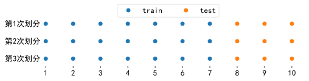
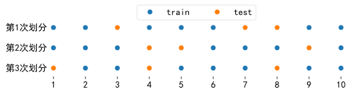
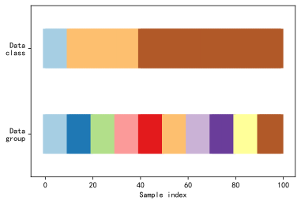
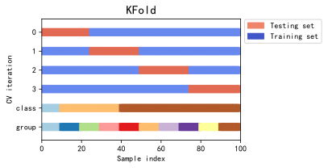
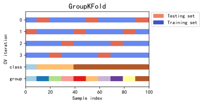
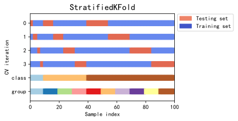
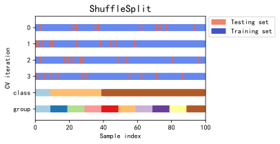
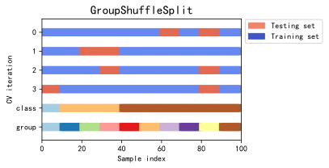
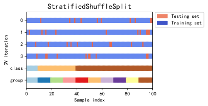
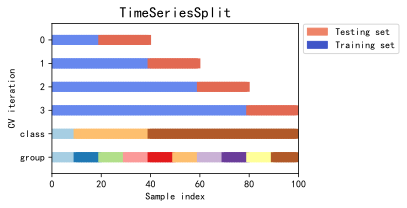

from toolkit import H
import numpy as np
import matplotlib.pyplot as plt
from matplotlib.patches import Patch
import matplotlib
matplotlib.rcParams['font.family'] = "SIMHEI" # 用来正常显示中文标签
matplotlib.rcParams['axes.unicode_minus'] = False # 用来正常显示负号
from sklearn.model_selection import (KFold, GroupKFold, StratifiedKFold,
RepeatedKFold, RepeatedStratifiedKFold,
LeaveOneOut, LeavePOut, LeaveOneGroupOut,
LeavePGroupsOut, PredefinedSplit,
ShuffleSplit, GroupShuffleSplit,
StratifiedShuffleSplit, TimeSeriesSplit)
Windows 10
Python 3.7.3 @ MSC v.1915 64 bit (AMD64)
Latest build date 2020.05.04
sklearn version: 0.22.1
拆分数据集
train_test_split：简单拆分
拆分函数（Splitter Functions）train_test_split()可以实现简单拆分。
from sklearn.model_selection import train_test_split
train_test_split(*arrays, test_size=None, train_size=None,
random_state=None, shuffle=True, stratify=None)
-
test_size：如果为float，则应介于0.0和1.0之间，表示测试集比例。如果是int，则表示测试样本的绝对数量。如果为None，则将该值设置为训练集比列的补码。如果train_size=None，则默认值为0.25。 -
train_size：如果为float，则应介于0.0和1.0之间，表示训练集比例。如果是int，则表示训练样本的绝对数量。如果为None，则将该值设置为测试集比列的补码。 -
random_state：随机种子。 -
shuffle：boolean，拆分数据集之前是否对数据进行混洗。 -
stratify：分层参数。如果不是None，则以分层方式拆分数据，并将其用作类标签。stratify的array与y的array一一对应。
data = np.arange(1,11)
x_train, x_test = train_test_split(data, test_size=0.3, shuffle=False)
# shuffle=False
num = 3
fig, axs = plt.subplots(num, 1, sharex=True, sharey=True, figsize=(8, 0.5*num))
for i in range(num):
x_train, x_test = train_test_split(data, test_size=0.3, shuffle=False)
axs[i].spines['left'].set_color('none')
axs[i].spines['right'].set_color('none')
axs[i].spines['top'].set_color('none')
axs[i].spines['bottom'].set_color('none')
axs[i].plot(x_train,np.full(7, 0),'o',label="train")
axs[i].plot(x_test,np.full(3, 0),'o',label="test")
axs[i].xaxis.set_ticks_position('none')
axs[i].set_yticks([])
axs[i].set_ylabel(f"第{i+1}次划分", fontsize=13, rotation=0, labelpad=18,
position=(0,0.25))
axs[i].xaxis.set_ticks_position('bottom')
axs[i].set_xticks(np.hstack((x_train, x_test)))
plt.xticks(fontsize=13)
plt.legend(loc='upper right', bbox_to_anchor=(0.7, 4.5), ncol=2,
fontsize=13, framealpha=0.5)
plt.savefig(r".\markdown\figures\train_test_split_no_shuffle.svg", dpi=600,
bbox_inches = 'tight')
plt.show()

# shuffle=True
num = 3
fig, axs = plt.subplots(num, 1, sharex=True, sharey=True, figsize=(8, 0.5*num))
for i in range(num):
x_train, x_test = train_test_split(data, test_size=0.3, shuffle=True)
axs[i].spines['left'].set_color('none')
axs[i].spines['right'].set_color('none')
axs[i].spines['top'].set_color('none')
axs[i].spines['bottom'].set_color('none')
axs[i].plot(x_train,np.full(7, 0),'o',label="train")
axs[i].plot(x_test,np.full(3, 0),'o',label="test")
axs[i].xaxis.set_ticks_position('none')
axs[i].set_yticks([])
axs[i].set_ylabel(f"第{i+1}次划分", fontsize=13, rotation=0, labelpad=18,
position=(0,0.25))
axs[i].xaxis.set_ticks_position('bottom')
axs[i].set_xticks(np.hstack((x_train, x_test)))
plt.xticks(fontsize=13)
plt.legend(loc='upper right', bbox_to_anchor=(0.7, 4.5), ncol=2,
fontsize=13, framealpha=0.5)
plt.savefig(r".\markdown\figures\train_test_split_shuffle.svg", dpi=600,
bbox_inches = 'tight')
plt.show()

拆分器可视化
sklearn 提供了如下15个拆分器，每个拆分器调用split()示例方法完成拆分。所有拆分器的split()方法都有三个参数：X、y、groups，但groups并不是对所有拆分器都起作用，有些拆分器的split()方法有groups参数只是为了兼容性，该参数是无效的。
为了了解这些拆分器的用法，需要了解以下四个基本概念：
- n_splits：数据集拆分成 n_splits 个互斥的子集，每个子集依次作为测试集，所以会返回 n_splits 个结果。
- groups：每个样本都有一个分组，相同组别的样本被在同一个拆分子集。
- stratified：样本有不同的类别 $y$，每个拆分子集尽量保持与总体相同的类别比例。
- shuffle：随机挑选样本进拆分组。
| 说明 | 类参数 | split方法的参数 |
|---|---|---|
| K折拆分 | KFold(n_splits, shuffle, random_state) | X, y, groups |
| K 组拆分 | GroupKFold(n_splits) | X, y, groups |
| 分层K折拆分 | StratifiedKFold(n_splits, shuffle, random_state) | X, y, groups |
| 重复K折拆分 | RepeatedKFold(n_splits, n_repeats, random_state) | X, y, groups |
| 重复分层K折拆分 | RepeatedStratifiedKFold(n_splits, n_repeats, random_state) | X, y, groups |
| 留一拆分 | LeaveOneOut() | X, y, groups |
| 留P拆分 | LeavePOut(p) | X, y, groups |
| 留一组 | LeaveOneGroupOut() | X, y, groups |
| 留P组 | LeavePGroupsOut(n_groups) | X, y, groups |
| 预定义拆分 | PredefinedSplit(test_fold) | X, y, groups |
| 随机拆分 | ShuffleSplit(n_splits=10, test_size, train_size, random_state) | X, y, groups |
| 分组随机拆分 | GroupShuffleSplit(n_splits, test_size, train_size, random_state) | X, y, groups |
| 分层分组随机拆分 | StratifiedShuffleSplit(n_splits=10, test_size, train_size, random_state) | X, y, groups |
| 时序拆分 | TimeSeriesSplit(n_splits, max_train_size) | X, y, groups |
创建示例数据：
np.random.seed(123)
cmap_data = plt.cm.Paired
cmap_cv = plt.cm.coolwarm
n_splits = 4 # 拆分成4组
# Generate the class/group data
sample_num = 100 # 一百个样本
X = np.random.randn(sample_num, 10)
percentiles_classes = [.1, .3, .6]
y = np.hstack([[ii] * int(100 * perc)
for ii, perc in enumerate(percentiles_classes)])
# Evenly spaced groups repeated once
groups = np.hstack([[ii] * 10 for ii in range(10)])
def visualize_groups(classes, groups, name):
# Visualize dataset groups
fig, ax = plt.subplots()
ax.scatter(range(len(groups)), [.5] * len(groups), c=groups, marker='_',
lw=50, cmap=cmap_data)
ax.scatter(range(len(groups)), [3.5] * len(groups), c=classes, marker='_',
lw=50, cmap=cmap_data)
ax.set(ylim=[-1, 5], yticks=[.5, 3.5],
yticklabels=['Data\ngroup', 'Data\nclass'], xlabel="Sample index")
visualize_groups(y, groups, 'no groups')

各个拆分器的区别：
# 定义函数
def plot_cv_indices(cv, X, y, group, ax, n_splits, lw=10):
"""Create a sample plot for indices of a cross-validation object."""
# Generate the training/testing visualizations for each CV split
for ii, (tr, tt) in enumerate(cv.split(X=X, y=y, groups=group)):
# Fill in indices with the training/test groups
indices = np.array([np.nan] * len(X))
indices[tt] = 1
indices[tr] = 0
# Visualize the results
ax.scatter(range(len(indices)), [ii + .5] * len(indices),
c=indices, marker='_', lw=lw, cmap=cmap_cv,
vmin=-.2, vmax=1.2)
# Plot the data classes and groups at the end
ax.scatter(range(len(X)), [ii + 1.5] * len(X),
c=y, marker='_', lw=lw, cmap=cmap_data)
ax.scatter(range(len(X)), [ii + 2.5] * len(X),
c=group, marker='_', lw=lw, cmap=cmap_data)
# Formatting
yticklabels = list(range(n_splits)) + ['class', 'group']
ax.set(yticks=np.arange(n_splits+2) + .5, yticklabels=yticklabels,
xlabel='Sample index', ylabel="CV iteration",
ylim=[n_splits+2.2, -.2], xlim=[0, 100])
ax.set_title('{}'.format(type(cv).__name__), fontsize=15)
return ax
cvs = [KFold,
GroupKFold,
StratifiedKFold,
ShuffleSplit,
GroupShuffleSplit,
StratifiedShuffleSplit,
TimeSeriesSplit]
for cv in cvs:
this_cv = cv(n_splits=n_splits)
fig, ax = plt.subplots(figsize=(6, 3))
plot_cv_indices(this_cv, X, y, groups, ax, n_splits)
ax.legend([Patch(color=cmap_cv(.8)), Patch(color=cmap_cv(.02))],
['Testing set', 'Training set'], loc=(1.02, .8))
# Make the legend fit
plt.tight_layout()
fig.subplots_adjust(right=.7)
plt.show()







这里未提到的拆分器的用法可以参考下文，下文为每个拆分器提供了示例。
KFold：K折拆分
将数据集划分得到K个互斥子集。
KFold(n_splits=5, random_state=None, shuffle=False)
from sklearn.model_selection import KFold
X = np.array([[1, 2], [3, 4], [5, 6], [7, 8]])
y = np.array([0, 0, 1, 1])
kf = KFold(n_splits=2,shuffle=False)
kf.get_n_splits(X)
print(kf)
for train_index, test_index in kf.split(X):
print("TRAIN:", train_index, "TEST:", test_index)
X_train, X_test = X[train_index], X[test_index]
y_train, y_test = y[train_index], y[test_index]
KFold(n_splits=2, random_state=None, shuffle=False)
TRAIN: [2 3] TEST: [0 1]
TRAIN: [0 1] TEST: [2 3]
print("未设置随机搅动")
kf = KFold(n_splits=2, shuffle=False) # 未设置随机搅动
i=0
while i < 5:
for train_index, test_index in kf.split(X):
print("TRAIN:", train_index, "TEST:", test_index)
X_train, X_test = X[train_index], X[test_index]
y_train, y_test = y[train_index], y[test_index]
print("------------------------------")
i=i+1
未设置随机搅动
TRAIN: [2 3] TEST: [0 1]
TRAIN: [0 1] TEST: [2 3]
------------------------------
TRAIN: [2 3] TEST: [0 1]
TRAIN: [0 1] TEST: [2 3]
------------------------------
TRAIN: [2 3] TEST: [0 1]
TRAIN: [0 1] TEST: [2 3]
------------------------------
TRAIN: [2 3] TEST: [0 1]
TRAIN: [0 1] TEST: [2 3]
------------------------------
TRAIN: [2 3] TEST: [0 1]
TRAIN: [0 1] TEST: [2 3]
------------------------------
print("设置随机搅动")
print("可以看到每次的训练集和测试集都会尽量改变")
kf = KFold(n_splits=2,shuffle=True) # 设置随机搅动
i=0
while i < 5:
for train_index, test_index in kf.split(X):
print("TRAIN:", train_index, "TEST:", test_index)
X_train, X_test = X[train_index], X[test_index]
y_train, y_test = y[train_index], y[test_index]
print("------------------------------")
i=i+1
设置随机搅动
可以看到每次的训练集和测试集都会尽量改变
TRAIN: [0 2] TEST: [1 3]
TRAIN: [1 3] TEST: [0 2]
------------------------------
TRAIN: [0 1] TEST: [2 3]
TRAIN: [2 3] TEST: [0 1]
------------------------------
TRAIN: [0 3] TEST: [1 2]
TRAIN: [1 2] TEST: [0 3]
------------------------------
TRAIN: [0 1] TEST: [2 3]
TRAIN: [2 3] TEST: [0 1]
------------------------------
TRAIN: [2 3] TEST: [0 1]
TRAIN: [0 1] TEST: [2 3]
------------------------------
GroupKFold：K 组拆分
GroupKFold 在保证kFold的基础上，保证同一个group的样本在同一个拆分。
GroupKFold(n_splits=5)
from sklearn.model_selection import GroupKFold
X = np.array([[1, 2], [3, 4], [5, 6], [7, 8], [9, 10]])
y = np.array([0, 0, 1, 1, 0])
groups = np.array([0, 0, 1, 1, 0])
group_kfold = GroupKFold(n_splits=2)
group_kfold.get_n_splits(X, y, groups)
print(group_kfold)
for train_index, test_index in group_kfold.split(X, y, groups):
print("TRAIN:", train_index, "TEST:", test_index)
X_train, X_test = X[train_index], X[test_index]
y_train, y_test = y[train_index], y[test_index]
GroupKFold(n_splits=2)
TRAIN: [2 3] TEST: [0 1 4]
TRAIN: [0 1 4] TEST: [2 3]
StratifiedKFold：分层K折拆分
与KFold相似，但是分层K折拆分按照原数据各类标签的所占比例进行拆分，维持每组的标签比例不变。
StratifiedKFold(n_splits=5, shuffle=False, random_state=None)
StratifiedKFold.split 有一个无效的 groups 参数（只是为了兼容），groups 总是默认为y，分类即分层。
from sklearn.model_selection import StratifiedKFold
X = np.random.random(150)
y = np.concatenate([np.zeros(50), np.ones(50), np.full(50,2)])
skf = StratifiedKFold(n_splits=2)
skf.get_n_splits(X, y)
print(skf)
for train_index, test_index in skf.split(X, y):
# print("TRAIN:", train_index, "TEST:", test_index)
X_train, X_test = X[train_index], X[test_index]
y_train, y_test = y[train_index], y[test_index]
for i in [0,1,2]:
print(f"第{i}类",len(y_train[y_train==i]))
print("------------------------------")
StratifiedKFold(n_splits=2, random_state=None, shuffle=False)
第0类 25
第1类 25
第2类 25
------------------------------
第0类 25
第1类 25
第2类 25
------------------------------
RepeatedKFold：重复K折拆分
StratifiedKFold(n_splits=5, n_repeats=10, random_state=None)
RepeatedKFold 重复 K-Fold n 次。当需要运行时可以使用它 KFold n 次，尽量在每次重复中产生不同的分割。
# 2折 K-Fold 重复 2 次的示例:
from sklearn.model_selection import RepeatedKFold
X = np.array([[1, 2], [3, 4], [5, 6], [7, 8]])
y = np.array([0, 0, 1, 1])
rkf = RepeatedKFold(n_splits=2, n_repeats=2, random_state=2652124)
for train_index, test_index in rkf.split(X):
print("TRAIN:", train_index, "TEST:", test_index)
X_train, X_test = X[train_index], X[test_index]
y_train, y_test = y[train_index], y[test_index]
print("------------------------------")
TRAIN: [0 1] TEST: [2 3]
------------------------------
TRAIN: [2 3] TEST: [0 1]
------------------------------
TRAIN: [1 2] TEST: [0 3]
------------------------------
TRAIN: [0 3] TEST: [1 2]
------------------------------
RepeatedStratifiedKFold：重复分层K折拆分
RepeatedStratifiedKFold(n_splits=5, n_repeats=10, random_state=None)
RepeatedStratifiedKFold.split同样有一个无效的groups参数，在内部groups总是默认为Y 分类即分层。
from sklearn.model_selection import RepeatedStratifiedKFold
X = np.array([[1, 2], [3, 4], [5, 6], [7, 8]])
y = np.array([0, 0, 1, 1])
rskf = RepeatedStratifiedKFold(n_splits=2, n_repeats=2)
for train_index, test_index in rskf.split(X, y):
print("TRAIN:", train_index, "TEST:", test_index)
X_train, X_test = X[train_index], X[test_index]
y_train, y_test = y[train_index], y[test_index]
TRAIN: [1 2] TEST: [0 3]
TRAIN: [0 3] TEST: [1 2]
TRAIN: [0 3] TEST: [1 2]
TRAIN: [1 2] TEST: [0 3]
LeaveOneOut：留一法
LeaveOneOut()
会返回$C_n^1$对训练、测试数据集。
from sklearn.model_selection import LeaveOneOut
X = np.array([[1, 2], [3, 4], [5, 6], [7, 8]])
y = np.array([0, 0, 1, 1])
loo = LeaveOneOut()
loo.get_n_splits(X)
print(loo)
for train_index, test_index in loo.split(X):
print("TRAIN索引:", train_index, "TEST索引:", test_index)
X_train, X_test = X[train_index], X[test_index]
y_train, y_test = y[train_index], y[test_index]
print("------------------------------")
LeaveOneOut()
TRAIN索引: [1 2 3] TEST索引: [0]
------------------------------
TRAIN索引: [0 2 3] TEST索引: [1]
------------------------------
TRAIN索引: [0 1 3] TEST索引: [2]
------------------------------
TRAIN索引: [0 1 2] TEST索引: [3]
------------------------------
LeavePOut：留P法
测试数据的可能组数为$C_n^P$。
LeavePOut(p)
from sklearn.model_selection import LeavePOut
X = np.array([[1, 2], [3, 4], [5, 6], [7, 8]])
y = np.array([0, 0, 1, 1])
lpo = LeavePOut(2)
lpo.get_n_splits(X)
print(lpo)
for train_index, test_index in lpo.split(X):
print("TRAIN:", train_index, "TEST:", test_index)
X_train, X_test = X[train_index], X[test_index]
y_train, y_test = y[train_index], y[test_index]
print("------------------------------")
LeavePOut(p=2)
TRAIN: [2 3] TEST: [0 1]
------------------------------
TRAIN: [1 3] TEST: [0 2]
------------------------------
TRAIN: [1 2] TEST: [0 3]
------------------------------
TRAIN: [0 3] TEST: [1 2]
------------------------------
TRAIN: [0 2] TEST: [1 3]
------------------------------
TRAIN: [0 1] TEST: [2 3]
------------------------------
LeaveOneGroupOut：留一组
与留一法相似，只是留一法相对于单个元素，留一组相对于一组元素。
from sklearn.model_selection import LeaveOneGroupOut
X = np.array([[1, 2], [3, 4], [5, 6], [7, 8]])
y = np.array([1, 2, 1, 2])
groups = np.array([1, 1, 2, 2])
logo = LeaveOneGroupOut()
# 'groups' is always required
## group 参数不会默认为y的label
logo.get_n_splits(X, y, groups)
#logo.get_n_splits(groups=groups) # 'groups' is always required
print(logo)
for train_index, test_index in logo.split(X, y, groups):
print("\n","TRAIN:", train_index, "TEST:", test_index)
X_train, X_test = X[train_index], X[test_index]
y_train, y_test = y[train_index], y[test_index]
print("------------------------------")
LeaveOneGroupOut()
TRAIN: [2 3] TEST: [0 1]
------------------------------
TRAIN: [0 1] TEST: [2 3]
------------------------------
LeavePGroupsOut：留P组
from sklearn.model_selection import LeavePGroupsOut
X = np.array([[1, 2], [3, 4], [5, 6]])
y = np.array([1, 2, 1])
groups = np.array([1, 2, 3])
lpgo = LeavePGroupsOut(n_groups=2)
lpgo.get_n_splits(X, y, groups) # 'groups' is always required
print(lpgo)
for train_index, test_index in lpgo.split(X, y, groups):
print("\n","TRAIN:", train_index, "TEST:", test_index)
X_train, X_test = X[train_index], X[test_index]
y_train, y_test = y[train_index], y[test_index]
print("------------------------------")
LeavePGroupsOut(n_groups=2)
TRAIN: [2] TEST: [0 1]
------------------------------
TRAIN: [1] TEST: [0 2]
------------------------------
TRAIN: [0] TEST: [1 2]
------------------------------
PredefinedSplit：预定义拆分
from sklearn.model_selection import PredefinedSplit
X = np.array([[1, 2], [3, 4], [1, 2], [3, 4]])
y = np.array([0, 0, 1, 1])
test_fold = [0, 1, -1, 1]
"""
test_fold = [0, 1, -1, 1]
表示在第一个验证集包含 test_fold中0元素对应索引的样本
第二个验证集包含test_fold中1元素对应索引的样本
索引为2的样本（第三个样本）不包含在任何验证集，只在训练集
可见，test_fold会决定产生的拆分次数，这里拆分次数实际上是2，因为1和1重复
将训练集对应的index设为-1，表示永远不划分到验证集中
"""
ps = PredefinedSplit(test_fold)
ps.get_n_splits()
print(ps)
for train_index, test_index in ps.split():
print("TRAIN:", train_index, "TEST:", test_index)
X_train, X_test = X[train_index], X[test_index]
y_train, y_test = y[train_index], y[test_index]
PredefinedSplit(test_fold=array([ 0, 1, -1, 1]))
TRAIN: [1 2 3] TEST: [0]
TRAIN: [0 2] TEST: [1 3]
ShuffleSplit：随机拆分
将样本集合随机“打散”后划分为训练集、测试集。
ShuffleSplit(n_splits=10, test_size=’default’, train_size=None,
random_state=None)
from sklearn.model_selection import ShuffleSplit
X = np.array([[1, 2], [3, 4], [5, 6], [7, 8], [3, 4], [5, 6]])
y = np.array([1, 2, 1, 2, 1, 2])
rs = ShuffleSplit(n_splits=5, test_size=.25, random_state=0)
rs.get_n_splits(X)
print(rs)
for train_index, test_index in rs.split(X):
print("TRAIN:", train_index, "TEST:", test_index)
print("----------------------------")
ShuffleSplit(n_splits=5, random_state=0, test_size=0.25,
train_size=None)
TRAIN: [1 3 0 4] TEST: [5 2]
----------------------------
TRAIN: [4 0 2 5] TEST: [1 3]
----------------------------
TRAIN: [1 2 4 0] TEST: [3 5]
----------------------------
TRAIN: [3 4 1 0] TEST: [5 2]
----------------------------
TRAIN: [3 5 1 0] TEST: [2 4]
----------------------------
rs = ShuffleSplit(n_splits=5, train_size=0.5, test_size=.25, random_state=0)
for train_index, test_index in rs.split(X):
print("TRAIN:", train_index, "TEST:", test_index)
print("----------------------------")
TRAIN: [1 3 0] TEST: [5 2]
----------------------------
TRAIN: [4 0 2] TEST: [1 3]
----------------------------
TRAIN: [1 2 4] TEST: [3 5]
----------------------------
TRAIN: [3 4 1] TEST: [5 2]
----------------------------
TRAIN: [3 5 1] TEST: [2 4]
----------------------------